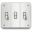

Faça parte da comunidade LXDE
Entre para a comunidade LXDE e faça parte de um projeto excitante. O time do LXDE dá as boas vindas a todos os contribuintes e colaboradores do projeto! Torne-se um desenvolvedor, um documentador, um mantenedor de pacotes, testador, ajudante no suporte a usuários, blogueiro, jornalista, escrevendo sobre o LXDE ou organizando eventos e apresentando o LXDE. Entre e nos ajude a desenvolver o mais rápido e eficiente sistema de energia e distribua para todos. Como idéia, veja o conteúdo abaixo. Nós estamos olhando sempre à frente para manter contato com você.
Baixe o LXDE e teste-o
O primeiro passo para entrar na comunidade é sempre baixar o software e testá-lo. O LXDE já funciona em diversas distribuições. Há guias sobre como instalá-lo no Ubuntu, Debian, Fedora e muitos outros em nosso wiki: http://wiki.lxde.org/en/Category:Linux_Distributions
Alternativamente, você também pode baixar o LXDE no Sourceforge ou uma versão USB ou Livce-CD em nosso website. Para baixar os componentes no Sourceforge: http://sourceforge.net/project/showfiles.php?group_id=180858
Teste o LXDE
Usuários não são somente consumidores. Nós acreditamos que os usuários podem ser contribuintes valiosos ao usar e testar o LXDE e oferecendo seu feedback. Nós lhe convidamos a procurar por bugs em componentes baixando o código-fonte diretamente do servidor subversion do LXDE. Faça o 'check out' no sistema de 'bug tracking' no Sourceforge e comece a testar o LXDE. Nosso sistema de Bug tracking no Sourceforge: http://sourceforge.net/tracker/?group_id=180858
Traduza o LXDE e a documentação do projeto
Você fala mais de um idioma? O LXDE é traduzido 100% por voluntários, o que significa que você pode fazer parte do projeto de tradução do LXDE, traduzido o software e a documentação que milhares de pessoas vão usar. Una-se a nós em:
- - A lista de discussão do projeto de tradução em
- https://lists.sourceforge.net/lists/listinfo/lxde-i18n
- - A página wiki de coordenação do projeto de tradução em
- http://wiki.lxde.org/en/Category:Translations
- - O fórum do projeto de tradução em
- http://forum.lxde.org/viewforum.php?f=12
Um jeito fácil de você também fazer parte do projeto de tradução é traduzir as páginas wiki. Verifique o wiki em seu idioma em http://wiki.lxde.org. Se seu idioma não está listado ainda e você gostaria de ser um mantenedor de conteúdo wiki, contate-nos e iremos configurar um wiki em seu idioma.
Torne-se um Desenvolvedor e contribua na forma de correções/código
O LXDE é um projeto Livre e de Código Aberto, iniciado em 2005, em Taiwan, com a publicação do primeiro componente: PCManFM. Nós estamos excitados para juntar forças e trabalhar com pessoas do mundo todo. Se você ver um bug no bug-tracker e pode consertá-lo, avise-nos e então coloque as mãos na massa. Todas as informações que você precisar para trabalhar com o LXDE estão em nossas páginas no Sourceforge.
- LXDE no Sourceforge
- http://sourceforge.net/project/showfiles.php?group_id=180858
- http://sourceforge.net/project/showfiles.php?group_id=156956
- Lista de discussão dos Desenvolvedores
- LXDE http://sourceforge.net/mailarchive/forum.php?forum_name=lxde-list
- PCManFM http://sourceforge.net/mailarchive/forum.php?forum_name=pcmanfm-develop
- IRC
- irc://irc.oftc.net#lxde
- Mais canais
- http://wiki.lxde.org/en/IRC_Chat
Torne-se um designer do LXDE
Código Aberto significa que qualquer um pode se envolver - não somente desenvolvedores. Verifique o design do LXDE e navegue a página do projeto no Sourceforge. Ajude-nos no Projeto de Design do LXDE.
- Nossa página de coordenação para o Projeto de Design do LXDE no wiki está aqui
- http://wiki.lxde.org/en/Category:Design
- A lista de discussão para o projeto de design está localizada em
- http://mailinglist.lxde.org/cgi-bin/mailman/listinfo/design
- O fórum para o projeto de design está localizado em
- http://forum.lxde.org/viewforum.php?f=13
Leia os blogs, verifique o wiki, ofereça suporte aos usuários no fórum
Os blogs do LXDE são escritos por desenvolvedores, contribuintes, voluntários e membros de companhias que dão suporte ao LXDE — fique ligado no progresso do LXDE e nas notícias e prepare-se para fazer parte de nosso time. Por exemplo: em nosso wiki, estamos colocando um recurso com soluções para problemas comuns, how-to's e outras informações valiosas. Verifique os recursos nos websites do LXDE e comece a contribuir.
- Visite o Wiki e não tenha medo de editar, adicionar informação, corrigir erros ou informações de tradução:
- http://wiki.lxde.org
- Veja nosso Blog em:
- http://blog.lxde.org
- Ou procure respostas para suas dúvidas no fórum do LXDE ou ajude novos usuários em:
- http://forum.lxde.org
Assine a uma Lista de discussão do LXDE
Assine uma Lista de discussão, influencie o desenvolvimento futuro participando de discussões e obtenha atualizações sobre os projetos do LXDE. Nós estamos atualmente oferecendo as seguintes listas:
- Desenvolvedores do LXDE
- https://lists.sourceforge.net/lists/listinfo/lxde-list
- Lista dos Desenvolvedores do Gerenciador de Arquivos PCMan
- https://lists.sourceforge.net/lists/listinfo/pcmanfm-develop
- Projeto de Tradução do LXDE
- http://mailinglist.lxde.org/cgi-bin/mailman/listinfo/translation
- Projeto de Design do LXDE
- http://mailinglist.lxde.org/cgi-bin/mailman/listinfo/design
- Fundação LXDE
- http://mailinglist.lxde.org/cgi-bin/mailman/listinfo/foundation
- Lista de Imprensa do LXDE
- http://mailinglist.lxde.org/cgi-bin/mailman/listinfo/foundation
Ajude o LXDE nas Redes Sociais
A comunidade LXDE está presente em toda a web. Mostre seu suporte à causa do LXDE para criar um ambiente de área de trabalho mais rápido, fácil de usar e eficiente no uso de energia e faça parte de grupos do LXDE em redes sociais. Torne-se um membro nos grupos, um fã, um ajudante de nossa causa comum ou construa seu próprio grupo social para reunir pessoas do mundo inteiro.
- LXDE no Facebook
- Tome parte na causa do LXDE: http://apps.facebook.com/causes/130831
- Torne-se um membro do Grupo LXDE: http://www.facebook.com/group.php?gid=118811935064
- Torne-se um fã do LXDE: http://www.facebook.com/pages/LXDE/21251244425
- LXDE no LinkedIn
- Torne-se um membro do grupo LXDE no LinkedIn: http://www.linkedin.com/groups?gid=1121347
- LXDE no Xing
- Fundação do grupo em progresso
- LXDE no MySpace
- Fundação do grupo em progresso
- LXDE no Orkut
- Fundação do grupo em progresso
- LXDE no Hi5
- Fundação do grupo em progresso
Promova o LXDE
Escreva sobre o LXDE, publique fotos, videos ou qualquer mídia que você conseguir pensar. Por que não escrever uma música? LXDE funciona bem e pode economizar energia. Nem todo mundo sabe disso. O LXDE pode ser útil e ajudar muitas pessoas em suas vidas. Ajude a promover o LXDE. Escreva sobre o LXDE em seu blog, em fóruns, no jornal de sua comunidade, em jornais de grande circulação ou simplesmente fale para os outros. Adicione o feed de seu blog em nossa página de conteúdo sobre o LXDE: http://wiki.lxde.org/en/Planet_LXDE. O feed da página do Planeta LXDE está localizado em: http://planet.lxde.org
Ajude o LXDE em eventos da comunidade
Monte um estande ou uma mesa sobre o LXDE em eventos da comunidade de Software Livre! Há muitos eventos da comunidade de Software Livre ao redor do mundo. O time principal do LXDE não é capaz de se apresentar em todos eles. Você pode ajudar a causa do LXDE tornando o projeto visível. Registre-se com um membro da comunidade LXDE em eventos, monte um ponto de informações e exibição do LXDE.
Torne-se um membro da LXDE Foundation
Faça parte da Fundação LXDE! Seja um membro da LXDE Foundation e.V. Reúna a comunidade em eventos e torne-se ativamente envolvido na construção do LXDE. Nós oferecemos filiação para contribuintes da comunidade e filiação para membros de empresas que nos assistem. Se você é um contribuinte da comunidade LXDE ou simplesmente quer ajudar a causa para ambientes de desktops mais rápidos e que gastam menos energia, pode fazer parte da LXDE Foundation e.V. como um membro ativo. Se você é uma corporação usando componentes do LXDE oui se você gostaria de fomentar o desenvolvimento e o suporte para comunidade LXDE, você pode se tornar um membro de apoio. Mais aqui: http://foundation.lxde.org/?page_id=20
Seja um doador da Comunidade LXDE
Se você gosta e usa o LXDE, por favor, considere suportar financeiramente a Comunidade LXDE ou como uma companhia de hardware, doando equipamentos. A LXDE Foundation e.V. está registrada como uma organização sem fins lucrativos e aceita como isenta de impostos. Seu estatuto a obriga a gastar todas as doações que recebe em prol do projeto LXDE. Por favor, apoie o proveto LXDE através de doações. Sua contribuição é muito importante!
 The LXDE website is licensed
under a Creative Commons
Attribution-Share Alike 3.0 license.
The LXDE website is licensed
under a Creative Commons
Attribution-Share Alike 3.0 license.Impress | Contact